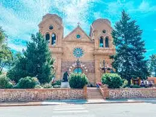
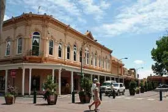

Santa Fe is the capital of of New Mexico in the US. It is known for its Pueblo-style architecture and as a creative arts hotbed. Founded as a Spanish colony in 1610, it has at its heart the traditional Plaza.The surrounding historic district's streets wind past adobe landmarks.The ciry has a population of 89,738.The capitol, Santa Fe is the US's highest capital city. It is also home of the oldest government building in the US, The Palace of Governors.
Santa Fe New Mexico
Caption 1 SceneryCaption 2 HikingCaption 3 Hot Air Balloon

Caption 4 Old TownCaption 5 Logo

Caption 6 Building